Dépenses¶
Budget hiérarchique¶
La vue hiérarchique des budgets vous permet d’afficher une vue d’ensemble des budgets de manière graphique avec un système d’indentation pour une meilleure lecture.
Vous pouvez filtrer la liste des budgets en utilisant le filtre de budget parent.
Vous pouvez afficher une famille de budget particulière.
Vous pouvez déplacer les budgets par « glisser-déposer ».
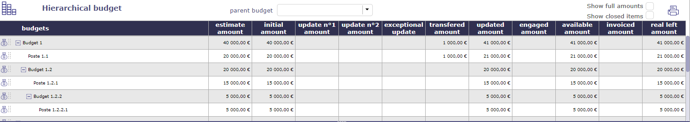
Écran du budget hiérarchique¶
Budget¶
Un budget est une liste de tous les produits et dépenses à planifier. C’est un plan qui permet de définir à l’avance les dépenses, les recettes et les économies possibles à réaliser pendant une période définie.
Il permet d’anticiper les ressources dont disposera l’entreprise à un moment précis.
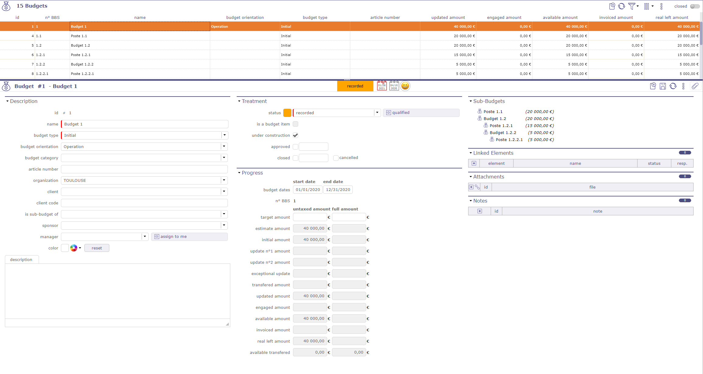
Écran Budget¶
Vous pouvez créer autant de budgets et sous-budgets que vous le souhaitez.
Une dépense est liée à un budget de base, c’est-à-dire un poste budgétaire
Un poste budgétaire est lié à un budget parent
Seuls les postes budgétaires actuels seront affichés dans les listes.
Les budgets actuels, en construction et clos n’apparaîtront pas dans les listes. Pour voir les éléments clos, cochez la case « clos ».
Filtre de budget parent¶
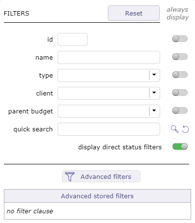
Filtres sur le budget¶
Avec le filtre, vous pouvez afficher dans la zone de liste, uniquement un budget et sa famille (sous-budget).
Une indentation de ceux-ci vers la droite montre qu’il s’agit de sous-budgets.
Pour voir les éléments clos dans cette liste, cochez la case « clos ».
Si vous changez le nom d’un budget, pensez à rafraîchir la page pour que les listes prennent en compte les modifications.
Le budget parent existe uniquement pour consolider les données des postes budgétaires sous-jacents.
Vous ne pouvez pas modifier les dépenses dans le champ Avancement d’un budget parent.
Seul le montant cible peut être modifié si le traitement du budget est encore en construction.
Le poste budgétaire¶
Le poste budgétaire est l’élément le plus fin de l’analyse budgétaire.
Ces postes ou destinations budgétaires vous permettront de détailler votre budget, en le catégorisant à votre convenance.
Lorsque vous créez des dépenses de projet ou des dépenses individuelles, vous pouvez les lier à un poste budgétaire spécifique.
Traitement¶
Cette zone vous permet de modifier le macro-état du budget.
Un budget peut être en construction
Un budget en construction ne permet pas de voir les champs « montant cible » et empêche la modification du montant estimé
Le macro-état « approuvé » modifie et annule automatiquement le macro-état « en construction ». La date est alors affichée dans les champs du macro-état concerné.
Chaque sous-budget est alors impacté et l’état « approuvé » sera ensuite propagé sur toute sa famille.
Chaque macro-état « en construction », « approuvé », « clos » et « annulé » modifié depuis l’écran du budget parent se propage en cascade sur toute la hiérarchie budgétaire.
Avancement¶
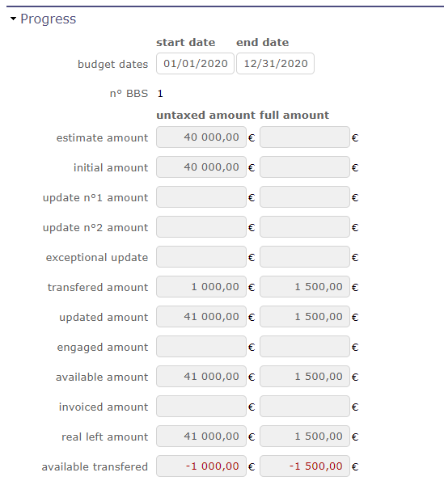
Section Avancement¶
Cette section permet de suivre la consolidation de toutes les dépenses.
Le montant cible est le seul montant que vous pouvez modifier sur un budget parent s’il est encore en construction.
Les autres montants sont récupérés des sous-budgets et consolidés sur le budget parent.
Le Montant transféré permet de libérer une somme d’un montant prévu pour un poste budgétaire afin de le redistribuer à un autre poste.
Ce montant est visible sur tous les postes budgétaires.
Montant transféré
Saisissez un montant négatif sur une ligne budgétaire pour transférer un montant
Saisissez un montant positif sur une ligne budgétaire pour récupérer ce montant
Seuls le budget parent et son sous-budget verront ce montant.
Un autre budget parent ne peut pas récupérer ce montant.
Détail des dépenses budgétaires¶
Cette section affiche les lignes en détail. Cette section, disponible au premier niveau du budget parent, affiche en détail les lignes de dépenses du projet qui ont été liées aux postes budgétaires définis.
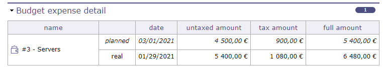
Lignes de détail¶
Type de dépense¶
Dépense de projet¶
Une dépense de projet stocke les informations sur les coûts de projet qui ne sont pas des coûts de ressources.
Cela peut être utilisé pour toutes sortes de coûts de projet :
Machines (location ou achat).
Logiciels.
Bureau.
Tout élément logistique.
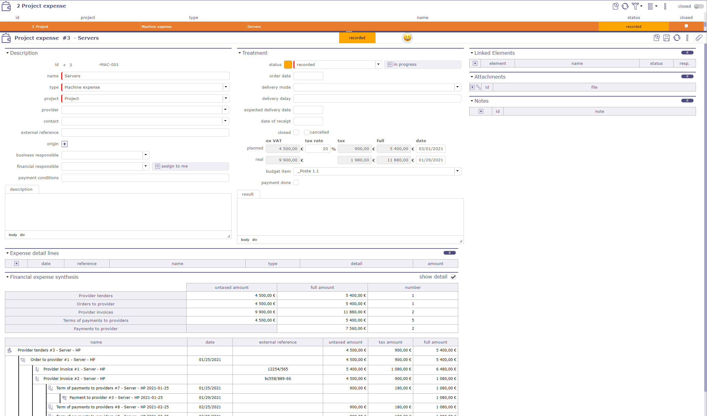
Dépense de projet¶
Champs Planifié et Réel
HT : Montant hors taxes. Le montant réel est automatiquement mis à jour avec la somme des montants des lignes de détail.
Taux de TVA : Montant de la TVA
Taxe : Montant de la TVA à partir du montant et du taux saisis précédemment.
TTC : Montant toutes taxes comprises.
Date de paiement :
Pour le champ « Planifié », c’est la date planifiée.
Pour le champ « Réel », il peut s’agir de la date de paiement ou autre.
Dépenses d’activité¶
La date d’échéance de paiement peut être récupérée depuis l’activité.
Choisissez parmi le début, le milieu ou la fin de l’activité associée à la dépense.
Enregistrez et la date est automatiquement affichée.
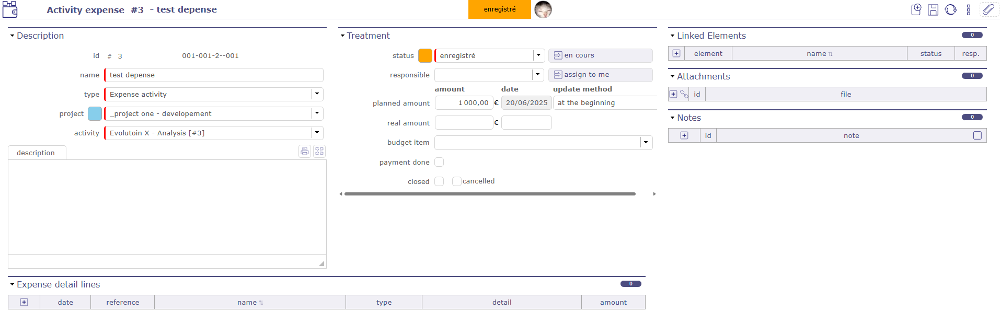
Activité de dépense¶
Dépenses individuelles¶
Une dépense individuelle stocke les informations sur les coûts individuels, tels que, par exemple, les frais de déplacement.
Cela peut par exemple être utilisé pour détailler toutes les dépenses sur un mois afin que chaque utilisateur n’ouvre qu’une seule dépense individuelle par mois (par projet), ou détailler tous les éléments d’une note de frais de déplacement.
Lignes de détail des dépenses¶
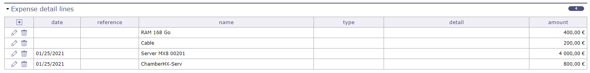
Lignes de détail du projet¶
Section Lignes de détail des dépenses
Cette section est commune aux dépenses individuelles, d’activité et de projet.
Elle permet de saisir des détails sur la ligne de dépense.
Note
Lorsqu’une ligne est saisie, le montant réel de la dépense est automatiquement mis à jour à la somme des montants des lignes.
La date réelle est définie avec la date de la première ligne de détail.
Cliquez sur
 pour ajouter une ligne de détail.
pour ajouter une ligne de détail.Cliquez sur
 pour modifier une ligne de détail existante.
pour modifier une ligne de détail existante.Cliquez sur
 pour supprimer la ligne de détail.
pour supprimer la ligne de détail.
Champ Date
Cela permet de saisir plusieurs éléments, pendant plusieurs jours, pour la même dépense, afin d’avoir par exemple une dépense par déplacement ou par mois.
Champ Type
Selon le type, de nouveaux champs apparaîtront pour aider au calcul du montant.
Types disponibles selon qu’il s’agit d’une dépense individuelle ou de projet.
Voir aussi
Champ Montant
Calculé automatiquement à partir des champs selon le type.
Peut également être saisi pour le type « dépense justifiée ».
Synthèse des dépenses financières
Lorsque vos éléments financiers ont été liés et attachés à une dépense de projet (détaillée ou non), vous trouverez le résumé de ces éléments.
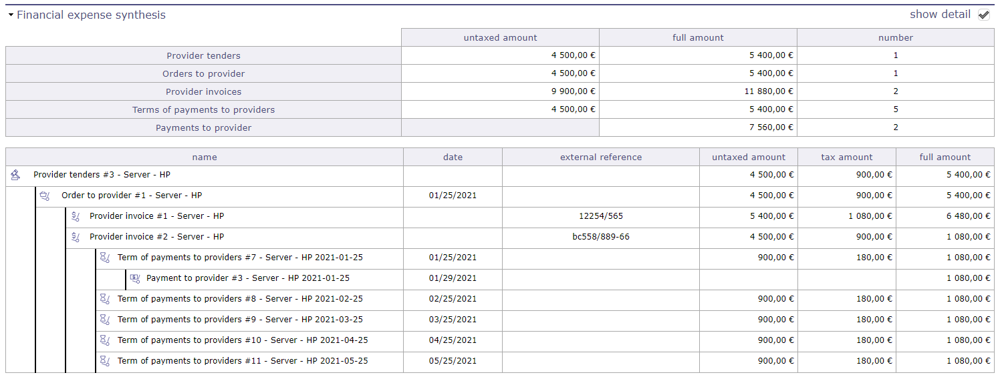
Synthèse des dépenses financières avec lignes de détail¶
Appel d’offres¶
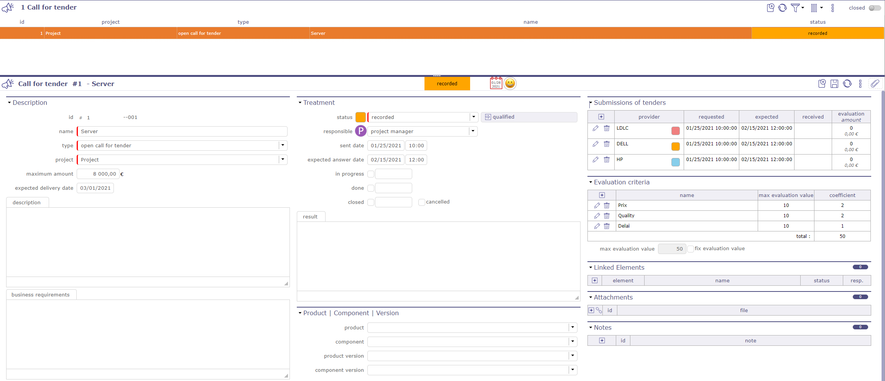
Écran d’appel d’offres¶
Cet écran vous permet d’enregistrer les informations sur vos besoins pour toute demande d’appel d’offres auprès de vos fournisseurs.
Cela peut être utilisé pour détailler toutes les demandes et trouver la meilleure proposition.
Pour vous aider à le faire, vous avez la possibilité de créer différents critères d’évaluation. Vous pouvez ensuite leur attribuer une valeur dans l’offre.
L’appel d’offres, une fois enregistré, crée automatiquement une offre fournisseur pour chacun des fournisseurs sélectionnés.
Soumissions d’appels d’offres
Cette section contient la liste des fournisseurs à qui l’invitation à soumissionner est envoyée.
Cliquez sur
pour ajouter un fournisseur à la liste.Cliquez sur
pour modifier les informations.Cliquez sur
pour supprimer un fournisseur de la liste.
Une fenêtre contextuelle s’affiche. Renseignez les différents champs nécessaires à vos besoins.
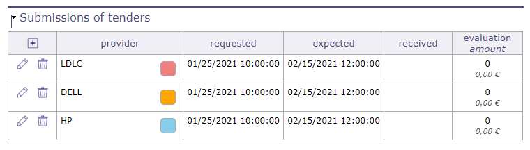
Fenêtre contextuelle de soumission à l’appel d’offres¶
Vous pouvez choisir un contact fournisseur spécifique.
Les contacts disponibles dans la liste sont liés au fournisseur sélectionné.
Ces contacts doivent être enregistrés à l’avance sur l’écran du fournisseur.
Changez de fournisseur, la liste des contacts s’adaptera
Les dates de la demande et de la réponse attendue.
Le statut de la soumission à l’appel d’offres. Plusieurs statuts sont disponibles.
Ils sont entièrement configurables et personnalisables. Chaque statut a un code couleur.
Vous pouvez accéder à chaque offre en cliquant sur le nom du fournisseur ou en visitant l’écran des offres fournisseur.
Voir aussi
Critères d’évaluation
Cette section vous permet d’ajouter des critères d’évaluation pour noter vos fournisseurs en fonction de vos demandes.
Cliquez sur
pour ajouter un critèreCliquez sur
pour modifier un critèreCliquez sur
pour supprimer un critère
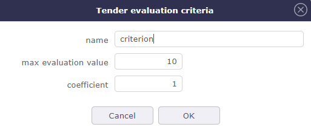
Ajouter un critère d’évaluation¶
Nommez votre critère d’évaluation.
Attribuez une valeur de notation maximale.
Attribuez un coefficient selon l’importance du critère.
Le score est calculé sur la base des valeurs attribuées et reportées dans le tableau « soumission d’appels d’offres ».
Astuce
Cliquez sur  pour passer logiquement d’un élément financier à un autre :
pour passer logiquement d’un élément financier à un autre :
Appel d’offres -> Offres fournisseur -> Commande au fournisseur -> Termes/Factures -> Paiements aux fournisseurs
Chaque fois que vous copiez un élément financier, l’élément financier le plus logique pour la suite du processus de commande sera automatiquement affiché.
Le montant des dépenses de ces éléments sera récupéré, transmis et lié à chacun des autres et vous permettra un suivi plus précis.
Vous pouvez empêcher le report des montants ou la génération de dépenses dans les paramètres globaux
Offres fournisseur¶
Les offres fournisseur stockent les informations sur les réponses aux appels d’offres que vous avez soumis.
Cela peut être utilisé pour détailler toutes les offres, les comparer, les évaluer pour choisir la plus adaptée à vos besoins.
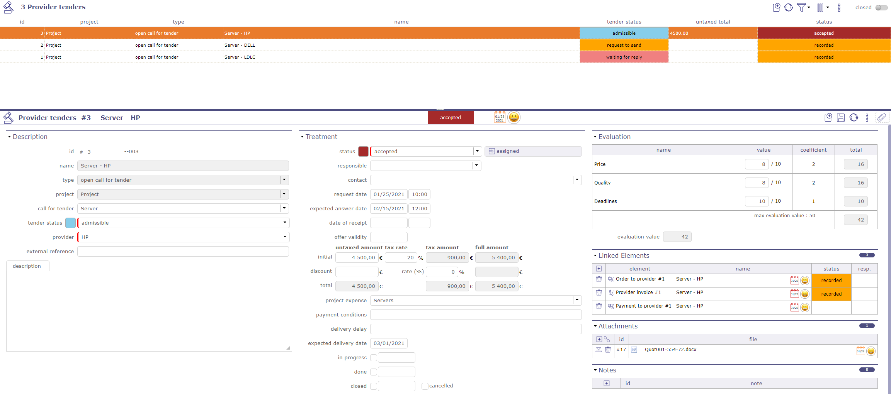
Écran des offres fournisseur¶
Une offre peut être créée manuellement ou générée automatiquement suite à un appel d’offres.
Chaque fournisseur ajouté à l’invitation à soumissionner génèrera une offre.
Générer une dépense¶
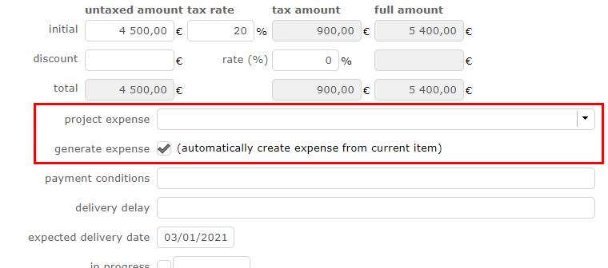
Générer une dépense¶
Vous pouvez joindre une dépense spécifique à votre commande.
Sélectionnez une dépense créée manuellement dans la liste des dépenses de projet.
Si vous n’avez pas créé de dépense en amont, cochez la case générer une dépense, une ligne sera alors créée dans les dépenses de projet.
Évaluation¶
La section Évaluation n’est disponible que lorsque l’offre est liée à un appel d’offres.
Si l’offre est créée manuellement, la section évaluation ne propose pas de critères.
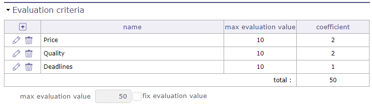
Section Évaluation¶
Lorsque le lien est établi alors :
Vous pouvez attribuer des critères d’évaluation
Vous pouvez attribuer une note avec un système de coefficients.
L’évaluation affichera un résumé de vos critères avec leurs scores.
Le score global sera ensuite affiché sur l’invitation à soumissionner pour toutes les offres concernées.
Voir aussi
les évaluations des critères dans le chapitre Appel d’offres
Commandes au fournisseur¶
Cet écran permet de gérer les commandes au fournisseur.
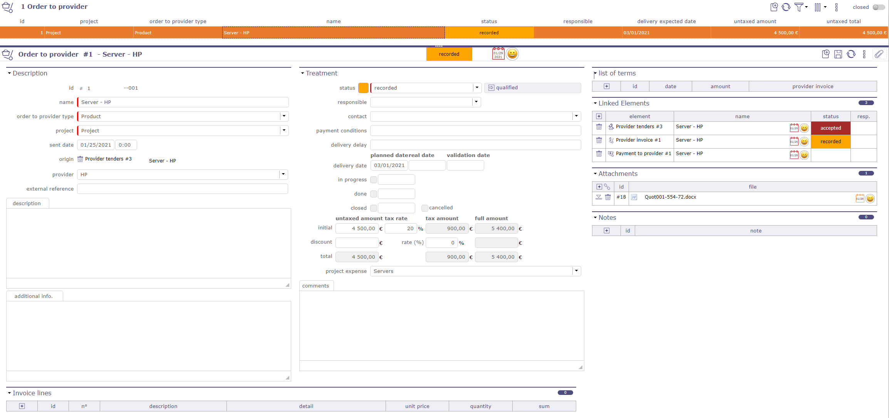
Écran des commandes au fournisseur¶
Liste des termes de commande
Cette section vous permet de créer un ou plusieurs termes pour vos factures.
Cliquez sur
pour ajouter un terme. Une fenêtre contextuelle s’ouvre.Cliquez sur
 pour ajouter un terme existant.
pour ajouter un terme existant.
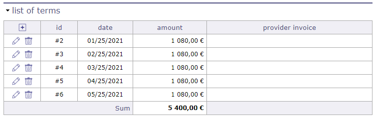
Section liste des termes¶
Le nom et la date sont obligatoires.
Saisissez le nombre d’échéances pour payer votre facture.
Si 1, il s’agit d’un paiement comptant.
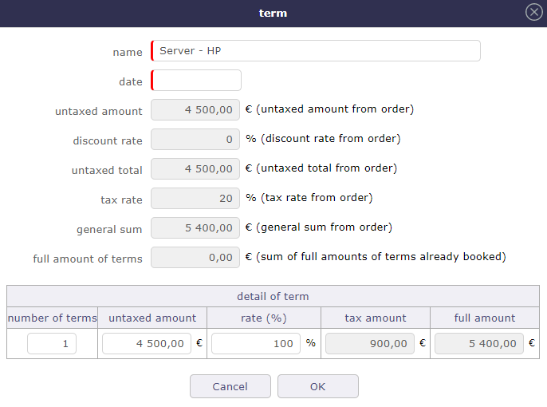
Fenêtre contextuelle de création des termes¶
Lorsque vous saisissez plusieurs termes, le calcul sur le montant total est effectué automatiquement.
Lorsque vous copiez votre commande en facture, les termes y sont automatiquement ajoutés.
Vous pouvez ajouter des échéances depuis l’écran des factures fournisseur si vous ne l’avez pas fait sur cet écran.
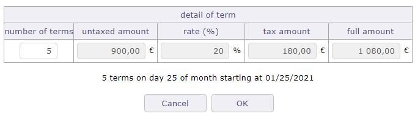
Calcul après nombre d’échéances saisies¶
Lorsque vous transformez votre commande en facture, les termes enregistrés dans l’offre sont automatiquement transférés vers les factures.
Voir : Liste des termes
Dans la commande, ceux-ci seront renseignés comme facturés avec un lien vers cette dernière.
Conditions de paiement aux fournisseurs¶
En France, les délais de paiement inter-entreprises sont réglementés et fixés à 60 jours calendaires maximum ou 45 jours fin de mois à compter de la date d’émission de la facture.
À défaut de mention du délai de paiement dans le contrat ou la facture, il est légalement fixé à 30 jours après réception des marchandises ou exécution de la prestation.
Selon le secteur, les délais sont modifiables
vous pouvez enregistrer, organiser, suivre et modifier vos dates de paiement à votre fournisseur
Vous pouvez enregistrer un ou plusieurs délais de paiement sur chaque facture au prestataire de services.
Une facture peut donc être payée soit en espèces soit en plusieurs versements.
Chaque échéance enregistrée, que ce soit sur l’écran des commandes fournisseur ou sur l’écran des factures fournisseur, génère une ligne sur l’écran des termes.
Note
HT : La valeur de la colonne est automatiquement mise à jour avec la somme des montants des lignes de facture.
Taxe : Si la taxe n’est pas définie, rien n’est appliqué dans ce champ et le montant restera hors taxe
TTC : Si le montant total hors taxe et le taux de taxe ont été saisis, le montant total sera calculé automatiquement
Sur le projet, la somme des dépenses doit être effectuée en TTC si la saisie des dépenses est en TTC
Factures fournisseur¶
Cet écran est utilisé pour gérer les factures générées manuellement ou liées aux offres fournisseur.
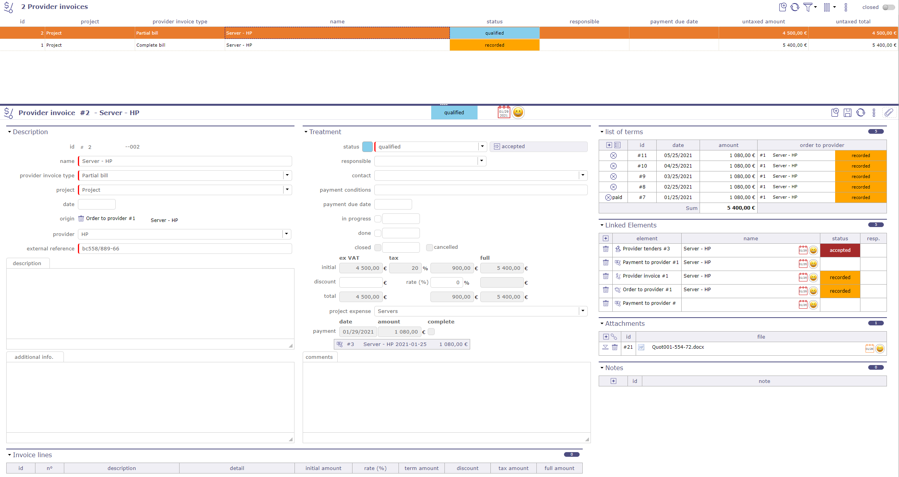
Écran des factures fournisseur¶
Attention
ProjeQtOr est compatible avec Factur-X depuis la version 14.5. Vous pouvez importer ou exporter vos factures au format PDF - XML.
Liste des termes
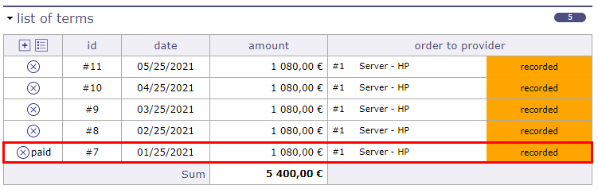
Liste des termes facturés¶
Cette section vous permet de créer un ou plusieurs termes pour vos factures.
Si votre facture a été créée à partir d’une commande, les termes enregistrés sur l’offre seront automatiquement récupérés sur la facture.
Cliquez sur
pour ajouter un terme. Une fenêtre contextuelle s’ouvre.Cliquez sur
pour ajouter un terme existant.Cliquez sur
 pour supprimer un terme.
pour supprimer un terme.Le nom et la date sont obligatoires.
Saisissez le nombre d’échéances pour payer votre facture.
Si 1, il s’agit d’un paiement comptant.
Fenêtre contextuelle de création des termes¶
Lorsque vous transformez votre commande en facture, les échéances enregistrées dans la commande sont automatiquement transférées vers les factures.
Dans les commandes, dans la section des échéances, celles-ci seront indiquées comme facturées
Chaque ligne fournit un lien vers l’écran de l’élément.
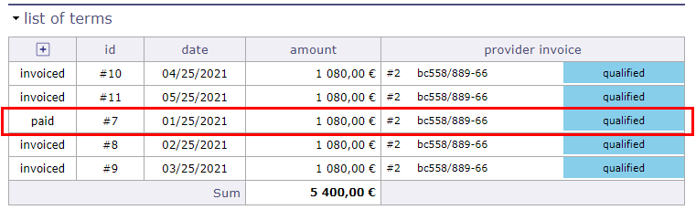
Liste des termes facturés¶
Paiements au fournisseur¶
Suivez le paiement de vos factures fournisseur pour mieux organiser votre flux de trésorerie général ou votre fonds de roulement.
Lorsque le paiement au fournisseur a été effectué et enregistré, sur l’écran de la facture fournisseur dans la section traitement, vous trouverez un enregistrement de ces paiements.
Dans la section liste des termes, vous pouvez voir dans le tableau les termes pour lesquels le règlement a été effectué.
Lorsque toutes les échéances ont été payées :
sur l’écran de la facture, la case « complet » est automatiquement cochée
La date du dernier versement est enregistrée
Un résumé est affiché avec le nom de chaque paiement effectué
Chaque ligne est cliquable.
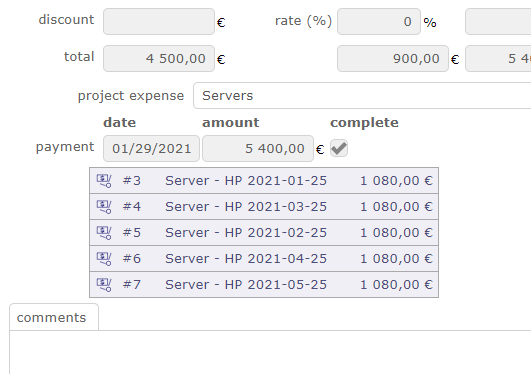
Liste des versements payés¶
Contrat fournisseur¶
ProjeQtOr vous donne la possibilité de gérer et suivre précisément vos contrats fournisseur
Le contrat fournisseur est nécessairement lié à un projet et un fournisseur.
Une vue diagramme de Gantt est disponible pour visualiser vos contrats graphiquement.
Voir aussi
Cette vue est également disponible pour le contrat client
Traitement¶
Suivez l’état, l’avancement de votre contrat dans cette section.
Responsable
Choisissez un responsable
Ses initiales sont affichées sur le diagramme de Gantt des contrats
Workflow
Le workflow est basé sur le workflow par défaut.
Vous pouvez modifier le workflow actuel.
Voir aussi
Renouvellement
Définit le comportement du renouvellement d’un contrat à la fin de la durée initialement prévue
Jamais : le contrat ne sera jamais renouvelé
Tacite : le contrat sera renouvelé s’il n’y a pas de résiliation
Express : le contrat est renouvelé et fait l’objet d’un acte écrit ou verbal
Statut
En cours : Date à laquelle le contrat est pris en charge. Effectif. Cette date peut être saisie manuellement ou en passant à l’état Affecté du workflow
Terminé : Date à laquelle le contrat se termine.
Clos : Date à laquelle le contrat a été clôturé.
Annulé : Date d’annulation
Avancement
Dans la section Avancement, déterminez les différentes dates et échéances du contrat, préavis, délais, paiements…
Diagramme de Gantt du contrat fournisseur¶
En plus de l’écran de gestion des contrats (zone liste et détails), vous pouvez visualiser vos contrats dans une vue temporelle sur un diagramme de Gantt. C’est le « planning des contrats »
Chaque barre représente les différents contrats, allant de la date de début à la date de fin du contrat.
Les dates de préavis et les dates d’échéance sont affichées comme des jalons.
Les barres Gantt des contrats clients deviennent rouges lorsque la date d’échéance est supérieure à la date de fin du contrat.
Aucun calcul n’est effectué. C’est une indication pour montrer une incohérence.

Écran du diagramme de Gantt du contrat fournisseur¶